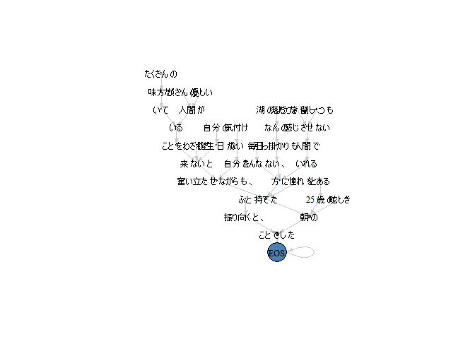

pipian is a tiny interface to CaboCha; a Japanese dependency structure parser. The main goal of pipian is to implement a parser for that XML output.
Usage
Installation
remotes::install_github("paithiov909/pipian")Cast dependency structure as an igraph
sentence <- "ふと振り向くと、たくさんの味方がいてたくさんの優しい人間がいることを、わざわざ自分の誕生日が来ないと気付けない自分を奮い立たせながらも、毎日こんな、湖のようななんの引っ掛かりもない、落ちつき倒し、音一つも感じさせない人間でいれる方に憧れを持てたとある25歳の眩しき朝のことでした"
df <- sentence %>%
pipian::ppn_cabocha() %>%
pipian::ppn_parse_xml()
head(df)
#> doc_id sentence_id chunk_id token_id token chunk_link chunk_score
#> 1 1 1 1 0 ふと 2 1.287564
#> 2 1 1 2 1 振り向く 37 -2.336376
#> 3 1 1 2 2 と 37 -2.336376
#> 4 1 1 2 3 、 37 -2.336376
#> 5 1 1 3 4 たくさん 4 1.927252
#> 6 1 1 3 5 の 4 1.927252
#> chunk_head chunk_func entity POS1 POS2 POS3 POS4 X5StageUse1
#> 1 1 0 <NA> 副詞 一般 <NA> <NA> <NA>
#> 2 2 2 <NA> 動詞 自立 <NA> <NA> 五段・カ行イ音便
#> 3 2 2 <NA> 助詞 接続助詞 <NA> <NA> <NA>
#> 4 2 2 <NA> 記号 読点 <NA> <NA> <NA>
#> 5 5 5 <NA> 名詞 副詞可能 <NA> <NA> <NA>
#> 6 5 5 <NA> 助詞 連体化 <NA> <NA> <NA>
#> X5StageUse2 Original Yomi1 Yomi2
#> 1 <NA> ふと フト フト
#> 2 基本形 振り向く フリムク フリムク
#> 3 <NA> と ト ト
#> 4 <NA> 、 、 、
#> 5 <NA> たくさん タクサン タクサン
#> 6 <NA> の ノ ノ
g <- df %>%
pipian::ppn_make_graph()
print(g)
#> IGRAPH e1fa649 DN-- 38 38 --
#> + attr: name (v/c), tokens (v/c), pos (v/c), score (e/n)
#> + edges from e1fa649 (vertex names):
#> [1] 111 ->112 112 ->1137 113 ->114 114 ->115 115 ->119 116 ->118
#> [7] 117 ->118 118 ->119 119 ->1110 1110->1114 1111->1114 1112->1113
#> [13] 1113->1114 1114->1118 1115->1116 1116->1117 1117->1118 1118->1132
#> [19] 1119->1120 1120->1130 1121->1122 1122->1123 1123->1124 1124->1130
#> [25] 1125->1127 1126->1127 1127->1128 1128->1129 1129->1130 1130->1132
#> [31] 1131->1132 1132->1136 1133->1134 1134->1136 1135->1136 1136->1137
#> [37] 1137->110 110 ->110
pagerank <- igraph::page.rank(g, directed = TRUE)
plot(
g,
vertex.size = pagerank$vector * 50,
vertex.color = "steelblue",
vertex.label = igraph::V(g)$tokens,
vertex.label.cex = 0.8,
vertex.label.color = "black",
edge.width = 0.4,
edge.arrow.size = 0.4,
edge.color = "gray80",
layout = igraph::layout_as_tree(g, mode = "in", flip.y = FALSE)
)